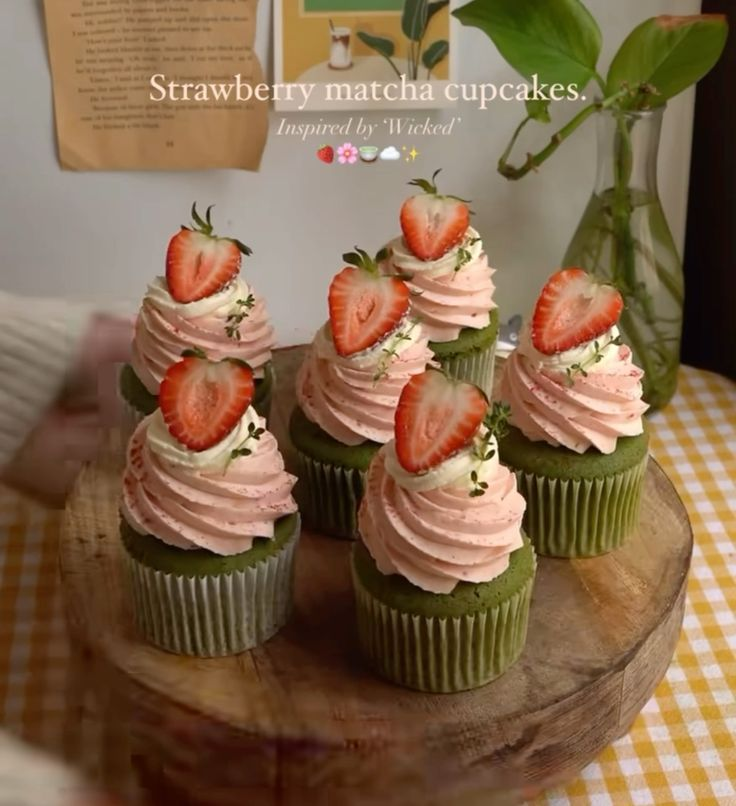

Home
Strawberry Matcha Cupcakes

Sweet, creamy strawberry buttercream pairs effortlessly with light-as-air matcha cupcakes. The flavors are just as perfect together as their colors are! This recipe screams spring.
Ingredients
Cupcakes
- 6 tbsp unsalted butter, room temp
- cup granulated sugar
- 1 egg + 1 egg white @ room temp
- 1 tsp vanilla extract
- 1 3/4 cup cake flour
- 1 1/2 tbsp matcha powder, sifted
- 3/4 tsp kosher salt
- 1 tsp baking powder
- 1/4 tsp baking soda
- 1/2 cup buttermilk, room temp
- 1/4 cup whole milk greek yogurt @ room temp
Strawberry Buttercream
- 1 cup chopped hulled strawberries
- 2 tsp granulated sugar
- 4 oz cream cheese @ room temp
- 1/2 cup unsalted butter @ room temp
- 1/4 tsp almond extract
- 1/4 tsp kosher salt
- 3 cups powdered sugar, sifted
- 1 tsp heavy cream
Instructions
- Make the cupcakes. In a large mixing bowl, cream together sugar and butter on medium-high until light and fluffy. Add egg, egg white, and vanilla, and continue to beat on medium-high until the mixture becomes slightly glossy and smooth, about 5 minutes.
- In a separate mixing bowl, mix together flour, salt, baking soda, baking powder, and sifted culinary matcha powder. Turn the mixer to low speed and alternate adding dry ingredients and buttermilk, beginning and ending with dry ingredients (dry, buttermilk, dry, buttermilk, dry). Mix until just combined. Add greek yogurt and fold until just combined. Fill a muffin tin with liners and fill about 2/3 with cake batter.
- Bake cupcakes at 325 degrees F for 20-25 minutes, until a toothpick comes out clean. Allow cupcakes to cool completely on a wire rack.
- Make the strawberry reduction. Puree fresh strawberries in a blender or food processer. Pour puree into a medium saucepan and reduce over medium heat until the mixture deepens in color and reduces by half. Put aside and allow the puree to cool to room temp.
- Make the strawberry buttercream. In a mixing bowl fitted with the paddle attachment, beat the room temp cream cheese and butter until smooth and fluffy. Add strawberry reduction and beat until smooth. Add 3 cups powdered sugar, almond extract, vanilla, and salt, and beat on medium-low until combined. Add heavy cream and turn the mixer up to high, whipping the buttercream until it becomes a shade lighter in color.
- Put the bowl of strawberry frosting in the fridge and allow to chill for at least 30 minutes, until the bowl is cold and the frosting is thickened slightly.
- Frost your cupcakes! I used a Wilton 1B tip, but it’s just as delicious slathered on with a knife.
- Cupcakes can be stored in the fridge for 3-4 days. Allow to come to room temp before serving.